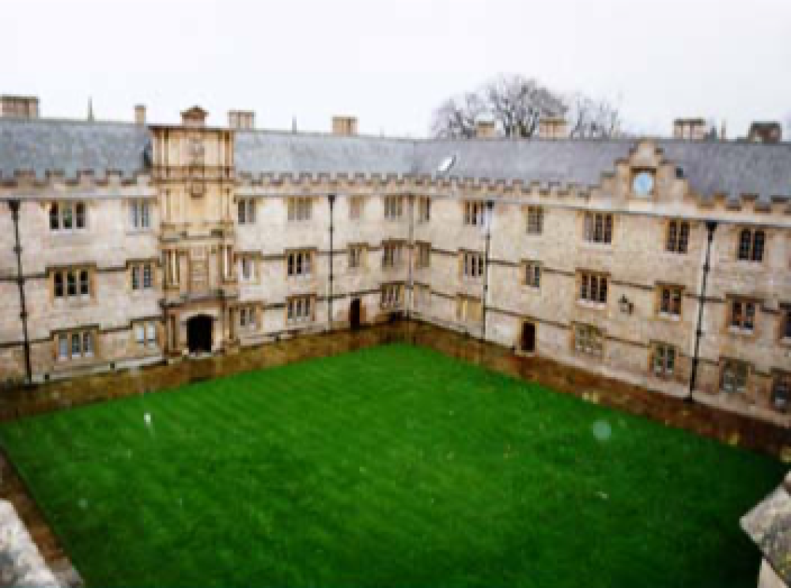
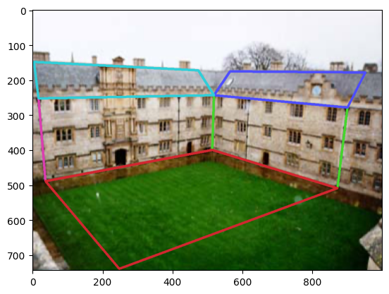
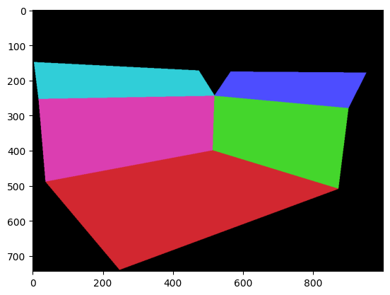
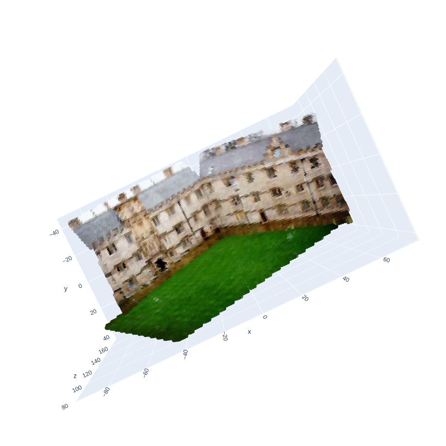
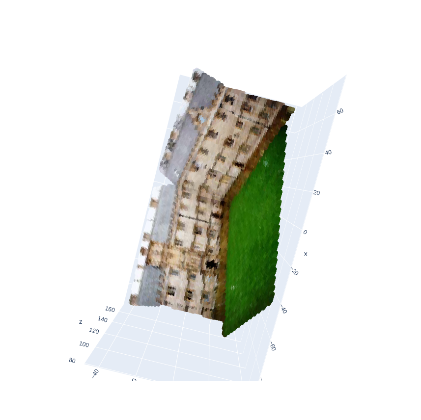

3. Brief description of your implementation (i.e., the
algorithm followed with relevant equations).
Annotate 3 pairs of parallel lines such that each one is
perpendicular to the others.
For each pair of parallel lines, say \(\mathbf{l}_1\) and \(\mathbf{l}_2\), compute the vanishing point
- \(\mathbf{v} =
\mathbf{l}_1\times\mathbf{l}_2\).
Considering each vanishing point is perpendicular to the others, the
cosine of the angle between them is 0.
Here, \(\omega =
(\mathbf{K}\mathbf{K}^T)^{-1}\) is the image of the absolute
conic given by a symmetric matrix \(\begin{bmatrix} \omega_1 & \omega_2 &
\omega_3 \\ \omega_2 & \omega_4 & \omega_5 \\ \omega_3 &
\omega_5 & \omega_6 \end{bmatrix}\)
Based on the question’s assumption of zero skew and square pixels, $
_2 = 0$ and $ _1 = _4$
Therefore, we have 4 variables with 3 degrees of freedom as scale
doesn’t matter.
Each of the 3 pairs of vanishing points gives 1 constraint - \(\mathbf{v}^T \omega \mathbf{v}^{'} =
0\) (Also, renaming the \(\omega\) variables)
Using the 4 pairs, construct a \((8\times9)\) matrix \(A\) and solve the equation \(Ah = 0\) by finding the nullspace using
SVD.
Reshape \(h\) to get the homography
matrix.
For each homography, \(\mathbf{H}_i =
\begin{bmatrix}h_1 & h_2 & h_3\end{bmatrix}\), the
following 2 constraints hold true
Here, \(\omega =
(\mathbf{K}\mathbf{K}^T)^{-1}\) is the image of the absolute
conic given by a symmetric matrix \(\begin{bmatrix} \omega_1 & \omega_2 &
\omega_3 \\ \omega_2 & \omega_4 & \omega_5 \\ \omega_3 &
\omega_5 & \omega_6 \end{bmatrix}\)
5. Brief description of your implementation (i.e., the
algorithm followed with relevant equations, and in particular
emphasizing the differences compared to part b).
Get the homographies for the 3 planes using 2D to 2D correspondences
Brief algorithm
Find 4 pairs of point correspondences using manual annotations.
Need to compute \(\mathbf{H}\) such
that \(\mathbf{x}^` = \mathbf{H}
\mathbf{x}\)
Construct the required matrix as per Direct Linear Transformation
algorithm
For a pair of point correspondences, \(\begin{bmatrix}x^`_1 \\ x^`_2 \\ 1\end{bmatrix} =
\begin{bmatrix}h_1 & h_2 & h_3 \\ h_4 & h_5 & h_6 \\ h_7
& h_8 & h_9\end{bmatrix}\begin{bmatrix}x_1 \\ x_2 \\
1\end{bmatrix}\)
Using the 4 pairs, construct a \((8\times9)\) matrix \(A\) and solve the equation \(Ah = 0\) by finding the nullspace using
SVD.
Reshape \(h\) to get the homography
matrix.
For each homography, \(\mathbf{H}_i =
\begin{bmatrix}h_1 & h_2 & h_3\end{bmatrix}\), the
following 2 constraints hold true
Here, \(\omega =
(\mathbf{K}\mathbf{K}^T)^{-1}\) is the image of the absolute
conic given by a symmetric matrix \(\begin{bmatrix} \omega_1 & \omega_2 &
\omega_3 \\ \omega_2 & \omega_4 & \omega_5 \\ \omega_3 &
\omega_5 & \omega_6 \end{bmatrix}\)
1. Output reconstruction from at least two different views.
Also include visualizations of annotations that you used.
Image
Input

Annotations

Planes

Reconstructed View 1

Reconstructed View 2

2. Brief description of your implementation (i.e., the
algorithm followed with relevant equations).
Using the annotations and logic from question 2a,
find \(\mathbf{K}\)
Annotate the 5 planes ange generate their normals
Find vanishing points using the annotations
Find the direction vectors
\(\mathbf{d}_1 =
\mathbf{K}^{-1}\mathbf{v}_1\)
\(\mathbf{d}_2 =
\mathbf{K}^{-1}\mathbf{v}_2\)
Calculate normal \(\mathbf{n} =
\mathbf{d}_1 \times \mathbf{d}_2\)
Normalize the normal vector to get a unit vector
Figure out what pixels lie in what plane and which pixels don’t lie
in any of them
Create a mask of the original image’s height and width, initialized
with -1
For each plane, use the opencv fillpoly function to populate the
pixels within that polygon with the plane’s index
Thus, at the end you have a single channel image of size (h, w) with
values in \(\begin{bmatrix}-1 & 0 & 1
& 2 & 3 & 4\end{bmatrix}\)
For each plane,
We need to find the equation of that plane. The equation of the
plane is given by \(\mathbf{n}^T\mathbf{X} + a
= 0\). Here, \(\mathbf{n}\) is
known and \(\mathbf{X}\) are the
variables. So, \(a\) needs to be
determined.
Annotate an additional point, \(\mathbf{x}\) within that plane
Get the corresponding backprojection ray using \(\mathbf{X} = \lambda\mathbf{P}^+\mathbf{x} =
\lambda\mathbf{K}^{-1}\mathbf{x}\). Here, the assumption is that
we will always be in the camera coordinate frame. So, the camera center
lies at the origin.
Now, to figure out lambda, we manually decide a depth for this
chosen point.
Now, get \(a = - \lambda *
\mathbf{n}^T\mathbf{X}\)
Once the equation of the plane is known, we need the actual 3D
coordinates for each of the pixels lying in that plane. This will be
done by finding the point of intersection of the backprojected ray and
the plane
Get the corresponding backprojection ray using \(\mathbf{X} = \lambda\mathbf{K}^{-1}\mathbf{x} =
\lambda \begin{bmatrix}X_1 \\ X_2 \\ X_3\end{bmatrix}\)
Substitute these in the plane equation, \(\mathbf{n}^T\mathbf{X} + a = 0\), and get
the \(\lambda\) by \(\lambda = \frac{-a}{\mathbf{n}^T\begin{bmatrix}X_1
\\ X_2 \\ X_3\end{bmatrix}}\)
Now, get the 3D point \(\mathbf{X} =
\lambda \begin{bmatrix}X_1 \\ X_2 \\ X_3\end{bmatrix}\)